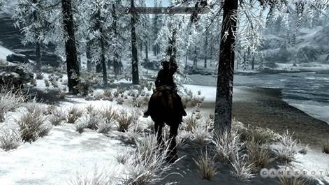
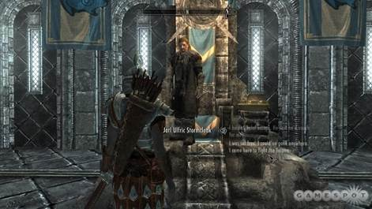
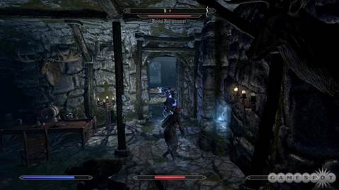
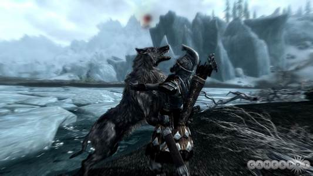

The province of Skyrim might be frigid, but the role-playing game that takes place within it burns with a fire few games possess. In The Elder Scrolls V: Skyrim, you take up arms against dragons, and your encounters with them are invariably exciting--yet depending on where your adventure takes you, such battles may not even represent the pinnacle of your experience. A side quest that starts as a momentary distraction may turn into a full-fledged tale that could form the entirety of a less ambitious game. Yes, Skyrim is another enormous fantasy RPG from a developer that specializes in them, and it could suck up hundreds of hours of your time as you inspect each nook and crevasse for the secrets to be found within. If you know Bethesda Softworks' previous games, you might be unsurprised that Skyrim is not a land without blemish, but rather harbors any number of technical glitches and frustrating idiosyncrasies that tear open the icy veil that blankets the land. Many of them are ones Elder Scrolls fans will probably see coming, but they're ultimately a low price to pay for the wonders of a game this sprawling and enthralling. Prepare for many sleepless nights to come.
Those nights traversing these lands are ones well spent. The game returns you to the continent of Tamriel, where you explore the northern realm called Skyrim, home to the Nord race. In these northern regions, snow flurries cloud your view, and platforms of ice float on the chilled waters. Nighttime often brings Tamriel's version of the aurora borealis, with its gorgeous blue and green ribbons stretching across the heavens. Skyrim's predecessor, Oblivion, featured prototypical fantasy environments--pretty but not quite evocative of the lore's darker undercurrents. Skyrim embraces its darker elements. You might feel an eerie chill as you glimpse a half-sunken ship through the mist, or watch as a dragon comes to life before your very eyes under the swirling firmament. Skyrim's atmospheric tone harks back to The Elder Scrolls III: Morrowind, only the hazy dust storms of the earlier game have been replaced by glimmering snowfall and opaque fog.
These lovely vistas are best seen from a distance. Closer inspection reveals hard edges, plain painted-on textures, and other visual flaws that are conspicuous should you seek them out. But like many enormous games, Skyrim makes a fantastic impression not because its individual elements are sharply honed, but because they contribute to a grander whole. There's so much to do that your quest log becomes an embarrassment of pleasures, offering dozens of choices at any given time, each one as enticing as the next. You could follow the story, of course, which weaves a compelling tale that casts you as a dragonborn; that is, the soul of a dragon emanates from within you. As such, you are the key to discovering why dragons have returned to the land, terrorizing cities and potentially ending the known world. The tale has you facing dragons, of course, but also crashing fancy dress parties and scouring sewers in search of a key figure long assumed dead. It's a well-crafted tale that makes good use of those fearsome flying creatures that horrify the masses with roaring gusts of fire and ice.

Galloping through a winter wonderland.
Even when you aren't pursuing story quests, though, the core narrative dogs you as you trot across the land on foot or on horseback. You might travel to a quaint hamlet only to discover that it's under siege by a hovering beast. The townspeople join you, aiming their arrows and fireballs upward, and not all of them may survive the encounter. These battles impress upon you the terror in which the populace lives, and thus give you a reason to be a hero to them. But plenty of narrative delights have nothing to do with dragons, and some of them could have formed the main story of a lesser RPG. Following an early lead takes you to a lonely house occupied by a single child with a disturbing request. The story that unravels has you acting as a predator and eavesdropping from an unimaginably sinister hiding place. Other story threads embrace the element of choice. You can take sides in the ongoing conflict between Imperial forces and the rebellious Stormcloaks, and then assault enemy camps and rescue prisoners jailed by the enemy. And in one memorable if minor quest line, you can kill a creepy cannibal--or join her and her cohorts at the table.
It's impressive enough that there's so much to do; it's even more impressive that most of it is wonderful. Not every dungeon is a joy to explore. Stone-turning puzzles occasionally bring the fun to a halt, and a few repeated cave designs could dampen your spirits. But overall, every task has an excellent sense of context, and surprises lurk around many a turn. Searching for a lost dog turns into a grander quest than you could have guessed--and witty writing and voice acting shine some light into this somber world. Even a simple "go there, kill that" bounty can be a thrill. After all, how often do you face a towering giant and a couple of woolly mammoths? It's too bad that as you approach the giant's camp, one of those mammoths might spawn 100 feet in the air and fall to its death, or land on another mammoth and ride on its back for a few seconds before sliding off.
U
lfric asks you to choose an ally. How will you decide?
So maybe not every surprise is a welcome one. But most are, and the element of the unexpected is what lures you to explore as much as you can. The reward could be a great weapon hidden in a locked chest, a gorgeous vista to ogle, or a book of lore that enhances one of your attributes. Or perhaps you'll discover words written in the dragons' tongue--an important discovery indeed. Finding those words is key to using Skyrim's most powerful spells, known as shouts. Well, they are half the key anyway: you also must defeat dragons and absorb their souls to activate those shouts. Shouts have their own cooldown timer and aren't tied to the magicka bar that governs standard spellcasting. With one shout, you can breathe fire on your attackers. With another, you can slow down time. Shouts hardly guarantee success in a difficult battle, but they can tip the scales in your favor. Besides, the dramatic visual and sound effects of both the discovery of words and the absorption of a dragon soul are a lovely bonus.
As for standard spells, they come in the usual schools of magicka: destruction (zap skeletons with sparks!), conjuration (summon a giant frost atronach!), alteration (light the way ahead!), and so on. You can even dual-wield spells, going full-on mage, with a glowing ball of fire in one hand and a summon at the ready in the other. For that matter, you can dual-wield one-handed weapons, giving you more flexibility in how you form your character. When you create your character, you choose a race from the usual Elder Scrolls standbys (Dark Elf, Breton, Argonian, and so forth), but you don't choose a class. Rather, your skill level with certain types of weapons, magicka schools, speech, and so on is governed primarily by how you play. Wear heavy armor, and taking blows gradually increases your heavy armor proficiency. Swing two-handed weapons, and you get better at using them.
That doesn't mean that you don't wield manual control over how you progress. Each time you gain a level, you choose to enhance one of your three main attributes: health, stamina, or magicka. You also earn a single point to spend on a perk, which might increase damage done with axes or let you conjure creatures at a greater distance. It's a great leveling system that forms around the way you play, but allows for tweaking so that you retain a sense of control. Even just the act of leveling up can be a pleasure due to the slick and colorful interface that imagines perks as stars in constellations. It can be a pain to navigate to certain perks; the game often has you flitting not to the star you want, but to all the ones surrounding it. But considering Oblivion's cumbersome interface, Skyrim's is a much improved beast. On console (and if you play with a controller on the PC), thumbstick navigation minimizes button presses, and you can easily move between your quest log and the main map. Additionally, you can mark weapons, spells, and items as favorites and then access them quickly during combat. Certain aspects might be fiddly, but on the whole, Skyrim's interface is a wonder, considering how much information and inventory is at your fingertips.
Regardless of how you tailor your character, the action is entertaining and varied. Trolls, undead draugrs, necromancers, bandits, witches, ratlike skeevers, and many more foes want to make your hero a zero. You occasionally feel as if you're flailing blindly rather than connecting your sharp blade with a vampire's flesh. But this is the tightest Elder Scrolls combat yet, the visual and audio cues normally providing proper feedback with your blows and zaps. Some death blows result in Fallout 3-style slow-motion kills, which retain their power because they're not overly frequent. Movement, too, has seen improvement: you can now play from a third-person view and feel like you're moving across the land instead of floating above it. What hasn't been improved is the friendly AI. It's nice to have a companion along for the adventure, and you're given one for free early in the story. But companions are morons, crowding you in tight passages, lagging behind when you need them the most, and even getting stuck in various death loops caused by spinning blade traps.
If you're the stealthy type, you can sneak about, picking pockets and breaking into homes. If you really enjoy keeping to the shadows, you may even wish to contract porphyric hemophilia--that is, vampirism. Vampires earn some benefits by way of certain spells and status effects, but also endure particular risks and must feed on unsuspecting victims as they slumber. But even if you like to wade directly into the fray, you can benefit from Skyrim's non-combat activities. Lock-picking no longer works as it did in Oblivion, but takes its cue from Fallout 3, having you rotate a lock pick and turn the lock to determine how closely you matched the correct position. As before, you can pick flowers and collect ingredients, and then create potions out of them at an alchemy table. (Forget mortars and pestles this time around.) And any adventurer can benefit from enchanting, which lets you imbue your equipment with certain status effects--though you must use soul gems to recharge their power.

Third-person view is much more functional than in previous Elder Scrolls games.
Many of Skyrim's delights are the touches that occur outside of the action. Citizens go about their daily lives, selling their wares in shops during the day and closing down at night to hang out in the pub or head home to rest. Under some circumstances, they may comment on your rancid breath or remark on how sickly you seem to look. Children run up and down the streets; one may even ask for you to stop a bully from picking on him. Citizens move somewhat stiffly, but with more grace than in previous Elder Scrolls games. Before, conversations brought the world to a halt and focused the camera on some character's waxy face. In Skyrim, certain dialogues limit the camera and temporarily paralyze you in place, but overall, conversations feel more organic than before--a nice improvement that enhances your sense of immersion.
Skyrim also uses scattered books and references to enthrall you. You may not be a big fan of reading books in role-playing games, but even so, you should make an effort here. If you don't feel like reading up on Tamriel's rich history each time you find a volume, grab it and read it later--there are a lot of narrative tidbits that deserve to be read. Elder Scrolls fans will appreciate nods to events in prior games, and everyone can enjoy the bite-size tales contained therein, about vampires, noble heroes, and gods that bestow their blessings on their followers. Skyrim takes place hundreds of years after the events of Oblivion, and organizations you might remember have been restructured or are shadows of their former selves. But Tamriel's history is threaded throughout Skyrim's fabric, and some quests, such as one that begins with an invitation to a faraway museum, are great reminders of past misfortunes that the world has not forgotten.

Final kill animation or big sloppy lupine kiss? You be the judge.
It's a pity that Skyrim often breaks the immersion it tries so hard to create, in ways both minor and major. Some bizarre details are simply annoying. A character might initiate conversation through the ceiling. The chatter of nearby characters could drown out important story exposition. Two shopkeepers standing next to each other may be voiced by the same actor and repeat the same lines. A dragon skeleton might disappear and then later drop out of the sky in a new location. A dragon could get stuck in place, flailing about in the geometry in a mess of wings and tail. For that matter, you could get stuck in the environment, maybe just by walking into a corner, which forces you to either quick-travel to a different location (if you're lucky enough to be outdoors) or load a save game. The game runs elegantly at highest settings on a properly equipped PC, though you could experience a crash to desktop or two. The question isn't whether you will experience anomalies--it's a given. The question is: which ones and how many?
If you've played previous Elder Scrolls games, glitches and oddities don't come as a surprise. Nevertheless, Skyrim comes in a year graced with multiple quality RPGs that feature tighter combat, fewer bugs, better animations, and so forth. But to be fair, none of those games are endowed with such enormity. Yet The Elder Scrolls V: Skyrim doesn't rely on sheer scope to earn its stripes. It isn't just that there's a lot to do: it's that most of it is so good. Whether you're slashing a dragon's wings, raising the dead back to life, or experimenting at the alchemy table, Skyrim performs the most spectacular of enchantments: the one that causes huge chunks of time to vanish before you know it.